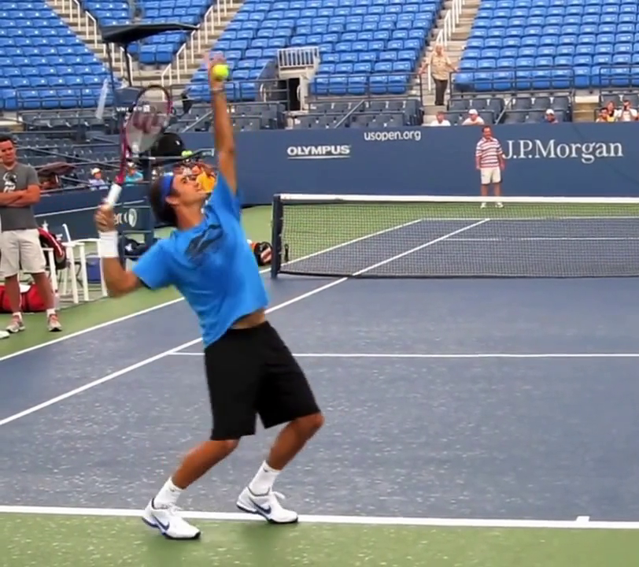
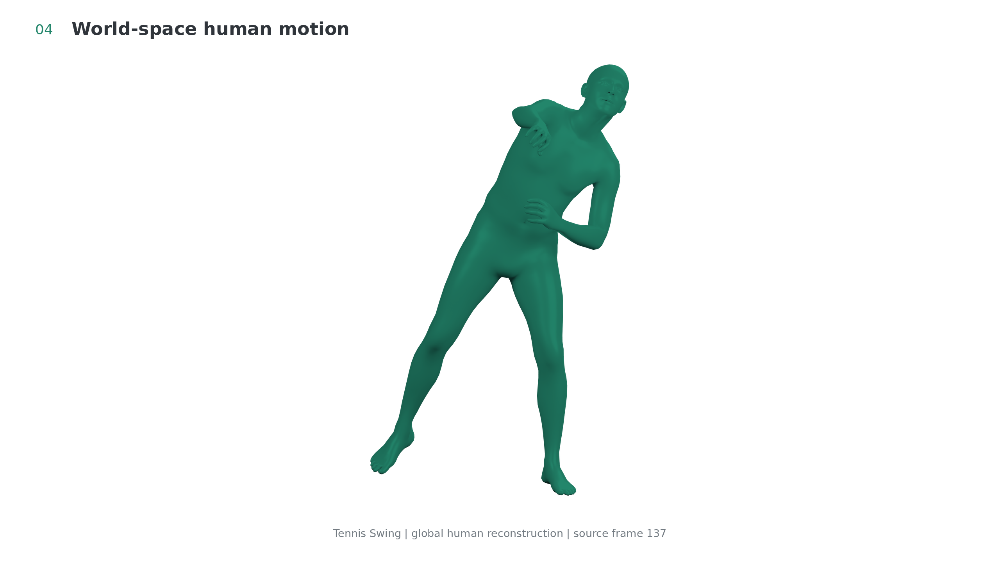
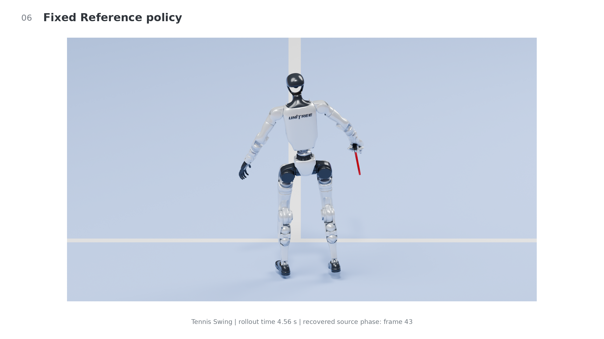
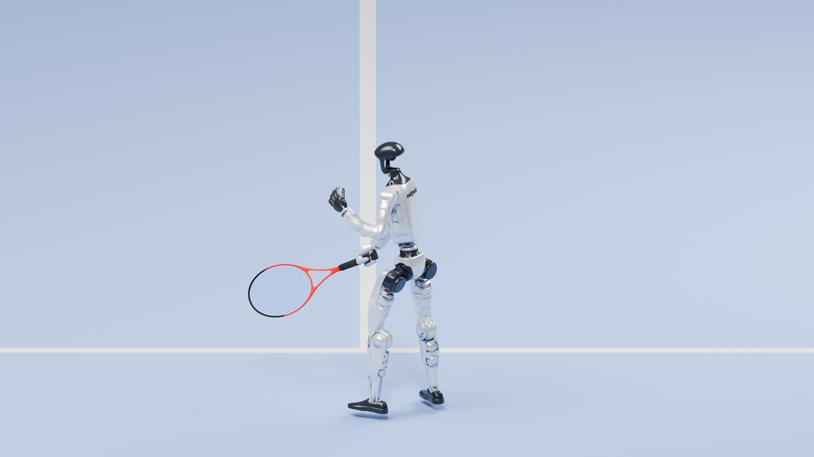
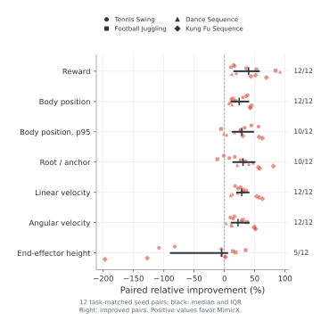
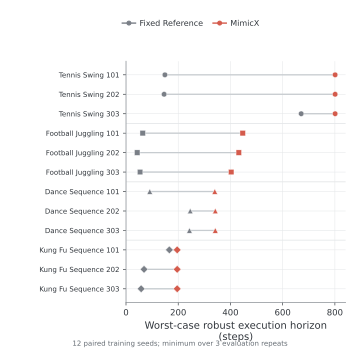
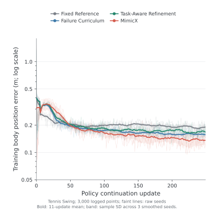
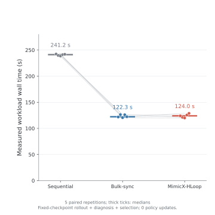

Diagnose execution
Find difficult time windows and rank local limb, global body and dynamics error channels.

MimicX: Policy-in-the-Loop Supervision Refinement
for Video-Driven Humanoid Motion Tracking
MimicX learns humanoid motion from human video. A policy's execution reveals which transitions and body regions need attention, turning tracking failures into targeted changes to training supervision.
The loop coordinates motion-tracking objectives and practice, then verifies each update through repeated execution. Better execution, not a larger training reward, determines which policy is retained.
Read the methodCore continuation study: four video tasks, three training seeds and three verification repeats. Improvements compare MimicX with Fixed Reference. HLoop timing uses a separate fixed-policy workload.
The same motion reference, with fixed or execution-guided supervision.
Tennis reaches strict success in all nine MimicX evaluation rollouts, compared with one of nine for Fixed Reference.
Readouts show Fixed Reference / MimicX averages over three seeds. Videos show a selected recorded trial. Solid robots are policy execution; translucent robots are motion references.
A registered motion reference establishes the task. Policy feedback determines how that task is practiced and rewarded.

Find difficult time windows and rank local limb, global body and dynamics error channels.
Continue the accepted policy with coordinated tracking terms and failure-window replay.
Prioritize completion and execution horizon, then tracking fidelity. Retain the current policy when no candidate passes.

Input videoHuman demonstration
World motionGlobal trajectory
Initial executionPPO / MuJoCo
Refined executionMimicX policyMotion-preparation stages illustrate the source sequence. The two policy frames are matched at recorded step 131. Scene props provide presentation context; the task evaluates humanoid motion tracking.
Matched continuation budgets across four methods and four video tasks: 48 task-method-seed trials, 144 final verification rollouts.




| Task | Method | Strict success | Horizon, steps | Body error |
|---|---|---|---|---|
| Tennis Swing | Fixed Reference | 11.1% | 322.0 | 0.241 m |
| Tennis Swing | MimicX | 100.0% | 801.0 | 0.157 m |
| Football Juggling | Fixed Reference | 0.0% | 53.7 | 0.286 m |
| Football Juggling | MimicX | 0.0% | 427.3 | 0.244 m |
| Dance Sequence | Fixed Reference | 0.0% | 193.3 | 0.270 m |
| Dance Sequence | MimicX | 0.0% | 341.3 | 0.244 m |
| Kung Fu Sequence | Fixed Reference | 0.0% | 97.7 | 0.249 m |
| Kung Fu Sequence | MimicX | 0.0% | 196.0 | 0.141 m |
All core tasks and component methods are retained in the underlying records. The selected Dance and Kung Fu outputs retain the protected incumbent policy.
MimicX-HLoop overlaps GPU rollout and CPU diagnosis along a dependency graph. Selection uses the complete evaluation evidence, regardless of execution order.

All three executors retain the same selection outcomes. Median times across five repetitions.
Fixed checkpoints; zero PPO updates in this timing study.
HLoop protocol